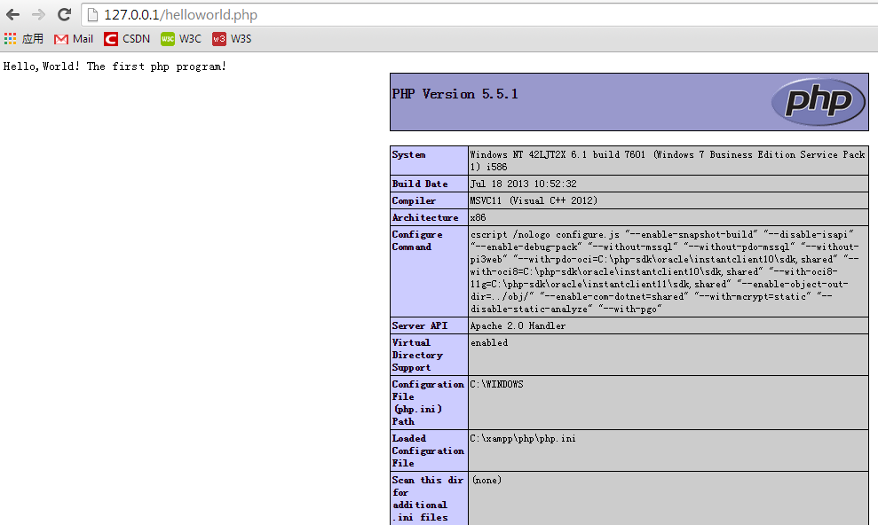
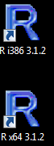
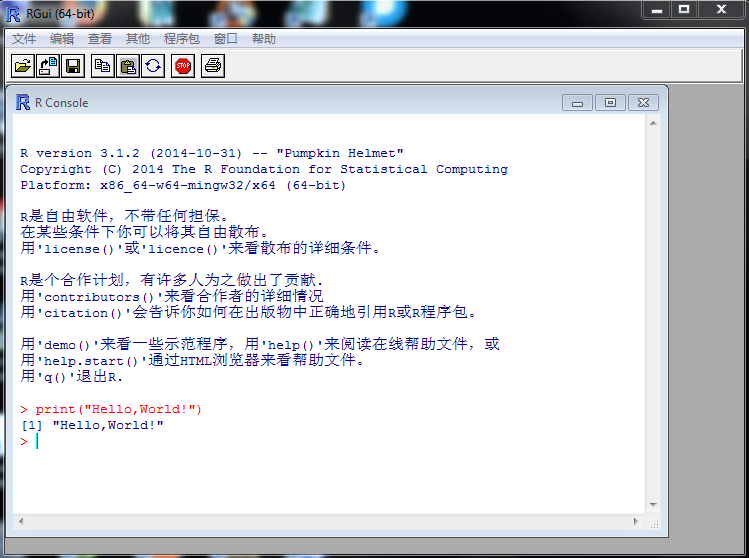
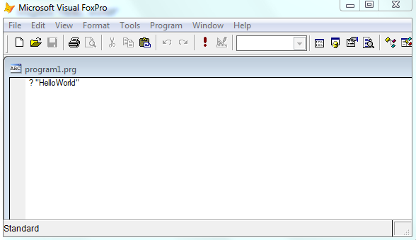
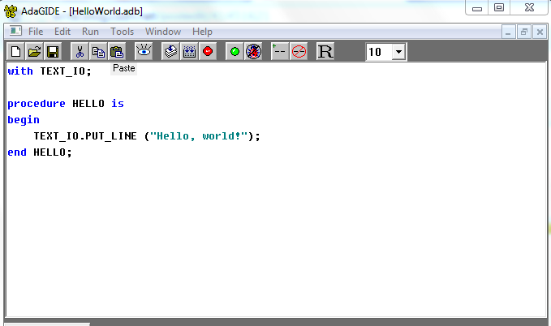
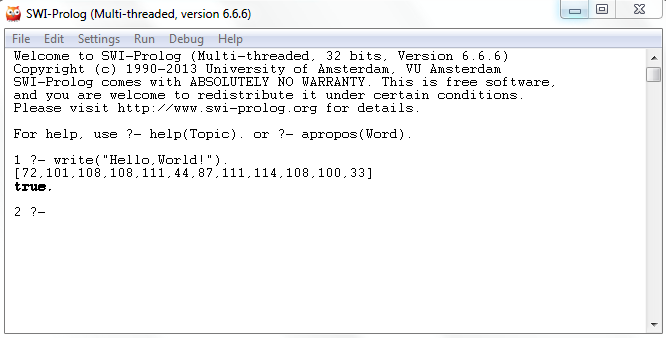
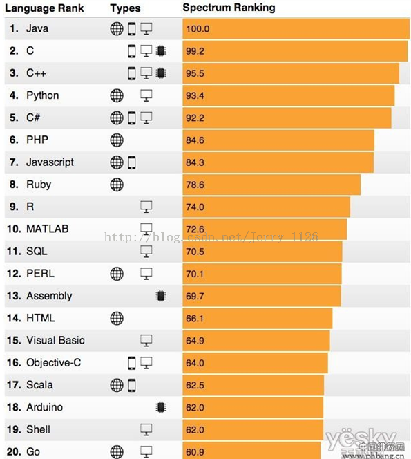

Este artículo presenta principalmente los programas Hello World en 24 lenguajes de programación, incluidos los conocidos Java, C, C++, C#, Ruby, Python, PHP y otros lenguajes de programación. Los amigos que lo necesiten pueden consultarlo.
Hello World es casi el primer programa que los programadores aprenden en varios lenguajes. Por impulso, recopilé y organicé cómo se implementa en los principales lenguajes de desarrollo, incluyendo una comprensión rápida y general del lenguaje, desarrollo, compilación, configuración del entorno, ejecución, lenguaje simple, etc. En realidad, muchos lenguajes están relacionados. Hoy en día, no basta con dominar solo un lenguaje. Por ejemplo, Python: la simplicidad del lenguaje y el desarrollo rápido son sus mayores ventajas, pero la desventaja es que la velocidad es relativamente lenta. C/C++/Java se desarrollan más lentamente, pero la velocidad de ejecución del programa es relativamente rápida. Si se quieren combinar las ventajas de ambos, hay que escribir extensiones de Python, lo que involucra lenguajes como (C, C++, Java, Fortan...). En la GUI de Python, Tkinter involucra el lenguaje TCL. Así que para el desarrollo en Python, es necesario conocer C (CPython está desarrollado en C), y preferiblemente también Java (Jython, Python está basado en Java), C++/C# (IronPython está basado en C# y .NET), y la comunicación entre diferentes lenguajes puede usar CORBAL, y Python puede invocar comandos de SHELL o comandos de Perl. Por lo tanto, dominar uno o dos lenguajes y estar familiarizado con varios es imprescindible.
A continuación se utilizan múltiples lenguajes para imprimir Hello World, incluyendo el entorno necesario (principalmente cómo compilar, enlazar, etc.), código, descripción del lenguaje e introducción a las características del lenguaje.
Y se incluye un apéndice: el top 20 de la clasificación general de lenguajes de programación en 2014, el top 10 de lenguajes de desarrollo web y el top 10 de lenguajes de desarrollo de aplicaciones móviles.
01. Java
Entorno: JDK1.7
C:\>java -version java version "1.7.0_51" Java(TM) SE Runtime Environment (build 1.7.0_51-b13) Java HotSpot(TM) Client VM (build 24.51-b03, mixed mode, sharing)
Código:
#FileName: HelloWorld.java
public class HelloWorld #如果有 public 类的话，类名必须和文件同名，注意大小写
{
#Java 入口程序，程序从此入口
public static void main(String[] args)
{
#向控制台打印一条语句
System.out.println("Hello,World!");
}
}
Descripción:
D:\HelloWorld>javac HelloWorld.java #用 javac 编译成字节码文件（HelloWorld.class） D:\HelloWorld>java HelloWorld #用 java 解释执行成特定平台的机器码 Hello,World!
02. C
Entorno: MinGW o varios compiladores de C/C++
D:\HelloWorld>gcc -v Reading specs from C:/Perl/site/lib/auto/MinGW/bin/../lib/gcc/mingw32/3.4.5/specs Configured with: ../gcc-3.4.5-20060117-3/configure --with-gcc --with-gnu-ld --with-gnu-as --host=min gw32 --target=mingw32 --prefix=/mingw --enable-threads --disable-nls --enable-languages=c,c++,f77,ad a,objc,java --disable-win32-registry --disable-shared --enable-sjlj-exceptions --enable-libgcj --dis able-java-awt --without-x --enable-java-gc=boehm --disable-libgcj-debug --enable-interpreter --enabl e-hash-synchronization --enable-libstdcxx-debug Thread model: win32 gcc version 3.4.5 (mingw-vista special r3)
Código:
#include <stdio.h>
int main() #main 入口函数
{
printf("Hello,World!"); #printf 函数打印
return 1; #函数返回值
}
Descripción:
D:\HelloWorld>gcc HelloWorld.c -o output #文件名 HelloWorld.c，-o 输出文件名 output HelloWorld.c:6:2: warning: no newline at end of file D:\HelloWorld>output #直接运行输出文件 Hello,World!
#如果未安装 GCC，那么必须按照 http://gcc.gnu.org/install/ 上的详细说明安装 GCC。 #为了在 Windows 上安装 GCC，需要安装 MinGW。 #为了安装 MinGW，请访问 MinGW 的主页 www.mingw.org，进入 MinGW 下载页面，下载最新版本的 MinGW 安装程序，命名格式为 MinGW-<version>.exe。 #当安装 MinWG 时，至少要安装 gcc-core、gcc-g++、binutils 和 MinGW runtime，但是一般情况下都会安装更多其他的项。 #添加您安装的 MinGW 的 bin 子目录到您的 PATH 环境变量中，这样您就可以在命令行中通过简单的名称来指定这些工具。 #当完成安装时，就可以从 Windows 命令行上运行 gcc、g++、ar、ranlib、dlltool 和其他一些 GNU 工具。
03. C++
Entorno: MinGW o varios compiladores de C++
Extensiones de archivos de cabecera: .h, .hpp, .hxx
Extensiones de archivos fuente: .cpp, .c++, .cxx, .cc, .C
Código:
#include <iostream> //std::cout 要用到的头文件
#include <stdio.h> //标准输入输出头文件
int main()
{
printf("Hello,World!--Way 1\n"); //printf 语句打印
puts("Hello,World!--Way 2"); //puts 语句
puts("Hello," " " "World!--Way 3"); //字符串拼接
std::cout << "Hello,World!--Way 4" << std::endl; //C++ 教科书上写法
return 1; //作为注释
}
Descripción:
D:\HelloWorld>g++ HelloWorld.c++ -o output //源文件后缀也可为 .cpp、.C D:\HelloWorld>output Hello,World!--Way 1 Hello,World!--Way 2 Hello,World!--Way 3 Hello,World!--Way 4
04. Python
Entorno: Python 2.x o Python 3.x
D:\HelloWorld>python Python 2.7.4 (default, Apr 6 2013, 19:55:15) [MSC v.1500 64 bit (AMD64)] on win32 Type "help", "copyright", "credits" or "license" for more information.
Código:
>>>> print "Hello,World!" #Python 2.x
Hello,World!
>>> print("Hello,World!") #Python 3.x
Hello,World!
Descripción:
1. En Python 3.x, la sentencia print es una función, por lo tanto es print().
2. También se puede escribir en un archivo .py y se ejecuta igualmente.
3. Python 2.6 y versiones superiores son básicamente iguales a Python 3.x, y también se puede usar print() para imprimir.
05. C#
Entorno: Windows
d:\HelloWorld>csc -v Microsoft (R) Visual C# 2005 Compiler version 8.00.50727.4927 for Microsoft (R) Windows (R) 2005 Framework version 2.0.50727 Copyright (C) Microsoft Corporation 2001-2005. All rights reserved.
Código:
//FileName: HelloWorld.cs
using System;
class TestApp
{
public static void Main()
{
Console.WriteLine("Hello,World!");
Console.ReadKey();
}
}
//执行如下:
d:\HelloWorld>csc HelloWorld.cs
Microsoft (R) Visual C# 2005 Compiler version 8.00.50727.4927
for Microsoft (R) Windows (R) 2005 Framework version 2.0.50727
Copyright (C) Microsoft Corporation 2001-2005. All rights reserved.
d:\HelloWorld>HelloWorld.exe
Hello,World!
Descripción:
C# en realidad es muy similar a Java. Lo que se usó fue el modo de línea de comandos, y es necesario configurar las variables de entorno. Se puede consultar: http://www.jb51.net/article/67171.htm.
Si se descarga directamente Microsoft Visual Studio, se puede compilar y ejecutar en el IDE con atajos de teclado.
06. PHP
Entorno: XAMPP 1.8.3, guía para configurar el entorno: http://www.cnblogs.com/wangkangluo1/archive/2011/07/19/2110943.html
Código:
<!DOCTYPE html> <body> <?php echo "Hello,World!"; //打印语句 echo "The first php program!"; //打印语句 echo phpinfo(); //phpinfo()系统函数,输出环境信息 ?> </body> </html>

Descripción:
#PHP（Hypertext Preprocessor）。 #PHP 是一种 HTML 内嵌式的语言，PHP 与微软的 ASP 颇有几分相似，都是一种在服务器端执行的嵌入 HTML 文档的脚本语言。 #PHP 语言的风格类似于 C 语言，现在被很多的网站编程人员广泛地运用。 #PHP 独特的语法混合了 C、Java、Perl 以及 PHP 自创新的语法。它可以比 CGI 或者 Perl 更快速地执行动态网页。 #与其他的编程语言相比，PHP 是将程序嵌入到 HTML 文档中去执行，执行效率比完全生成 HTML 标记的 CGI 要高许多。 #与同样是嵌入 HTML 文档的脚本语言 JavaScript 相比，PHP 在服务器端执行，充分利用了服务器的性能。 #PHP 执行引擎还会将用户经常访问的 PHP 程序驻留在内存中，其他用户再一次访问这个程序时就不需要重新编译程序了，只要直接执行内存中的代码就可以了，这也是 PHP 高效率的体现之一。 #PHP 具有非常强大的功能，所有的 CGI 或者 JavaScript 的功能，PHP 都能实现，而且几乎支持所有流行的数据库以及操作系统。
07. JavaScript
Entorno: node.js o jaxer
Enlace de descarga de node:http://nodejs.org/download/Siga las instrucciones y descargue el archivo que desee.
D:\>node -v v0.10.33
Código:
var sys = require("sys"); #导入需要的 sys 模块
sys.puts("Hello,World!"); #调用里面的 puts 函数来打印字符串
Descripción:
D:\>node HelloWorld.js #node + *.js，执行 Hello,World! #JavaScript 是 Web 的编程语言。 #所有现代的 HTML 页面都使用 JavaScript。 #JavaScript 非常容易学。
08. Ruby
Entorno: ruby 1.9.3
D:\HelloWorld>ruby -v ruby 1.9.3p429 (2013-05-15) [i386-mingw32]
Código:
#可用 print 语句打印
print "Hello,World!\n"
#可用 puts 语句打印
puts "Hello,World!\n"
#可以先声明一个变量，然后再用 puts 语句
a = "Hello,World!\n"
puts a
#可以先写个函数再调用
def say(name)
"Hello,#{name}"
end
puts say("World!")
Descripción:
D:\HelloWorld>ruby HelloWorld.rb #运行方式类似 Python、Perl Hello,World! Hello,World! Hello,World! Hello,World!
09. R
Entorno: R-3.1.2-win (compatible con 32 y 64 bits), con GUI correspondiente respectivamente.
C:\>R #安装好了之后，输入 R 后显示 R version 3.1.2 (2014-10-31) -- "Pumpkin Helmet" Copyright (C) 2014 The R Foundation for Statistical Computing Platform: i386-w64-mingw32/i386 (32-bit) R 'license()''licence()' R. 'contributors()' 'citation()'RR 'demo()''help()' 'help.start()'HTML 'q()'R.

Código:
print("Hello,World!")

Descripción:
El lenguaje R es un lenguaje de programación de software libre y entorno operativo, utilizado principalmente para análisis estadístico, gráficos y minería de datos.
A continuación se presentan los pasos detallados de instalación y descarga, consulte:
http://www.jb51.net/os/RedHat/335436.html
10. SQL
Entorno: ORACLE SQL/PLUS
Código:
SQL> select 'Hello,World!' from dual; 'HELLO,WORLD ------------ Hello,World!
Descripción:
También se puede crear una tabla, insertar, consultar y finalmente eliminar la tabla.
SQL> CREATE TABLE MESSAGE (TEXT CHAR(15)); #创建表
INSERT INTO MESSAGE (TEXT) VALUES ('Hello, world!'); #插入表
SELECT TEXT FROM MESSAGE; #查询表
DROP TABLE MESSAGE; #删除表
Table created.
SQL>
1 row created.
SQL>
TEXT
---------------
Hello, world!
11. Perl
Entorno: Perl 5.16 o MinGW
URL de descarga:http://www.activestate.com/activeperl/downloads
D:\HelloWorld>perl -v This is perl 5, version 16, subversion 3 (v5.16.3) built for MSWin32-x86-multi-thread (with 1 registered patch, see perl -V for more detail) Copyright 1987-2012, Larry Wall Binary build 1603 [296746] provided by ActiveState http://www.ActiveState.com Built Mar 13 2013 11:29:21 Perl may be copied only under the terms of either the Artistic License or the GNU General Public License, which may be found in the Perl 5 source kit. Complete documentation for Perl, including FAQ lists, should be found on this system using "man perl" or "perldoc perl". If you have access to the Internet, point your browser at http://www.perl.org/, the Perl Home Page.
Código:
#!C:\Perl\bin #Windows 平台下
#!/usr/bin/env perl #Linux 环境下
print "Hello,World!\n"; #print("Hello,World") 也可
Resultado de salida:
D:\HelloWorld>perl HelloWorld.pl #类似于 python file.py Hello,World!
Descripción:
#Perl 5.10 及以上的版本可以用 use 5.010; say "Hello,World!";
12. HTML
Entorno: HTML o HTML 5.0
Código:
<!DOCTYPE html> <html> <body> <h1>This is the first program!</h1> <p>Hello,World!</p> </body> </html>
Descripción:
La mayoría de los navegadores principales soportan HTML 4.0, y algunos navegadores solo soportan parte de las funciones de HTML 5.0.
13. VB
Entorno:
VBC version 8.0.5 D:\Learn\C>vbc -v Microsoft (R) Visual Basic Compiler version 8.0.50727.5483 for Microsoft (R) .NET Framework version 2.0.50727.5485 Copyright (c) Microsoft Corporation. All rights reserved. vbc : Command line warning BC2007 : unrecognized option 'v'; ignored vbc : Command line error BC2008 : no input sources specified
Código:
'FileName: HelloWorld.rb rb 作为 VB 源文件的后缀
Module Hello
Sub Main() '程序人口函数
MsgBox("Hello,World!") '计算机屏幕上显示信息
End Sub 'End 作为程序块结尾
End Module '单引号作为注释
Descripción:
D:\>vbc HelloWorld.vb #vbs 来编译，生成 HelloWorld.exe 可执行文件 Microsoft (R) Visual Basic Compiler version 8.0.50727.5483 for Microsoft (R) .NET Framework version 2.0.50727.5485 Copyright (c) Microsoft Corporation. All rights reserved. D:\>HelloWorld
14. Scala
Entorno: compilador scala-2.11.4.msi
d:\>scala
Welcome to Scala version 2.11.4 (Java HotSpot(TM) Client VM, Java 1.7.0_51).
Type in expressions to have them evaluated.
Type :help for more information.
scala> println("Hello,World!"); #可在交互式界面执行 println 语句，很像 java
Hello,World!
Código:
object HelloWorld
{
def main(args:Array[String])
{
println("Hello,World!");
}
}
//编译
d:\HelloWorld>scala HelloWorld.scala
Hello,World!
Descripción:
Scala es un lenguaje de programación que incorpora la programación orientada a objetos y funcional en tipos estáticos, con el objetivo de expresar patrones de programación comunes de manera concisa, elegante y con seguridad de tipos. Integra suavemente las características de los lenguajes orientados a objetos y funcionales, haciendo que los programadores de Java y otros lenguajes sean más productivos al usar Scala.
15. Shell
Entorno: plataforma Linux/Unix, o plataforma Windows con MinGW y MSYS instalados
Código:
#安装了MinGW和MSYS的Windows平台 D:\HelloWorld>echo "Hello,World!" "Hello,World!" #Linux平台下 #echo "Hello,World!" 或 printf "Hello,World!" #如果是写在文件中: chmod +x HelloWorld.sh ./HelloWorld.sh
Descripción:
#Shell 诞生于 Unix，是与 Linux/Unix 交互的工具，单独地学习 Shell 是没有意义的，必须先学习 Linux/Unix。 #Shell 虽然是 Unix 的第一个脚本语言，但它是相当优秀的。它结合了延展性与效率，持续保有独具的特色，并不断的被改良，功能更加强大。 #缺点：Shell 需要依赖其他程序才能完成大部分的工作，优点：简洁的脚本语言标记方式，比 C 语言编写的程序执行更快、更有效率。
16. Delphi
Entorno: Delphi 7
Código:
[File|New|Application]--> arrastrar un Button y un Label --> hacer doble clic en el Button, codificar de la siguiente manera:
procedure TForm1.Button1Click(Sender: TObject); begin label1.Caption := 'Hello,World!'; end; procedure TForm1.FormCreate(Sender: TObject); begin end; end.
Descripción:
Delphi es una famosa herramienta de desarrollo rápido de aplicaciones (Rapid Application Development, abreviado RAD) en la plataforma Windows.
Parece que muchos piensan que Delphi ha decaído y está obsoleto (muchos colegas a mi alrededor ni siquiera han oído hablar de Delphi).
Pero yo no lo creo así. "Los programadores reales usan C, los programadores inteligentes usan Delphi". Lo clásico no necesita muchas palabras, especialmente para desarrollar programas GUI, ¡arrastrar y listo!
17. Fortran
Entorno: Linux o plataforma Windows con MinGW instalado
D:\HelloWorld>gfortran -v Using built-in specs. COLLECT_GCC=gfortran COLLECT_LTO_WRAPPER=c:/mingw/bin/../libexec/gcc/mingw32/4.8.1/lto-wrapper.exe Target: mingw32 Configured with: ../gcc-4.8.1/configure --prefix=/mingw --host=mingw32 --build=mingw32 --without-pic --enable-shared --enable-static --with-gnu-ld --enable-lto --enable-libssp --disable-multilib --ena ble-languages=c,c++,fortran,objc,obj-c++,ada --disable-sjlj-exceptions --with-dwarf2 --disable-win32 -registry --enable-libstdcxx-debug --enable-version-specific-runtime-libs --with-gmp=/usr/src/pkg/gm p-5.1.2-1-mingw32-src/bld --with-mpc=/usr/src/pkg/mpc-1.0.1-1-mingw32-src/bld --with-mpfr= --with-sy stem-zlib --with-gnu-as --enable-decimal-float=yes --enable-libgomp --enable-threads --with-libiconv -prefix=/mingw32 --with-libintl-prefix=/mingw --disable-bootstrap LDFLAGS=-s CFLAGS=-D_USE_32BIT_TIM E_T Thread model: win32 gcc version 4.8.1 (GCC)
Código:
program hello
print *, "Hello World!"
end program hello
Descripción:
Fortran es el lenguaje informático más antiguo, utilizado principalmente en el campo del cálculo científico e ingeniería, igual que Python en este aspecto.
D:\HelloWorld>gfortran -ffree-form HelloWorld.f -o out.exe #-ffree-form 自由格式 -o 后面是输出文件 #后缀名可以为.f, .F, .f90, .fpp. 如果是 .f90 结尾的文件，可以不用 -ffree-form，因为该后缀结尾的文件默认是自由格式 D:\HelloWorld>out #如果是 .f 结尾的话，必须要加上，否则报错 Hello World!
18. TCL
Entorno: Linux o plataforma Windows con WinGW
Código:
#命令行交互方式 D:\>tclsh % puts "Hello,World!" Hello,World! % exit D:> #文件方式运行 #!/usr/local/bin/tcl puts "Hello, world!" D:\>tclsh HelloWorld.tcl Hello,World!
Descripción:
1. El compilador para archivos con extensión .tcl es tclsh (modo de línea de comandos) o wish (modo GUI).
2. TCL (Tool Command Language) es un lenguaje de script de propósito general que puede ejecutarse en casi todas las plataformas y es muy potente.
19. FoxPro
Entorno: VFP9.0
Código:
?"Hello,World!"

Descripción:
Aunque la compilación y ejecución pasaron, aún no sé cómo mostrar el resultado compilado en la interfaz GUI; el resultado solo se muestra al ejecutar el archivo .FXP en la interfaz de línea de comandos.
Visual FoxPro, originalmente llamado FoxBase, fue un producto de base de datos lanzado por la compañía estadounidense Fox Software en 1988, que se ejecutaba en DOS y era compatible con la serie xBase. FoxPro es una versión mejorada de FoxBase, cuya versión más alta llegó a ser la 2.6. Posteriormente, en 1992, Fox Software fue adquirida por Microsoft, que la desarrolló, permitió que se ejecutara en Windows y la renombró Visual FoxPro. FoxPro supuso una gran mejora en funciones y rendimiento con respecto a FoxBASE, principalmente por la introducción de controles como ventanas, botones, listas y cuadros de texto, lo que mejoró aún más la capacidad de desarrollo del sistema.
20. Ada
Entorno: compilador gnat de ADA95
d:\HelloWorld>gnat GNAT 4.8.1 Copyright 1996-2013, Free Software Foundation, Inc. List of available commands gnat bind gnatbind gnat chop gnatchop gnat clean gnatclean gnat compile gnatmake -f -u -c gnat check gnatcheck gnat elim gnatelim gnat find gnatfind gnat krunch gnatkr gnat link gnatlink gnat list gnatls gnat make gnatmake gnat metric gnatmetric gnat name gnatname gnat preprocess gnatprep gnat pretty gnatpp gnat stack gnatstack gnat stub gnatstub gnat test gnattest gnat xref gnatxref
Código:

Descripción:
Ada es un lenguaje de programación de propósito general con una gran capacidad expresiva, desarrollado por el Departamento de Defensa de los Estados Unidos para superar la crisis del desarrollo de software. Después de eliminar las líneas con # para obtener el archivo final procesado, se puede compilar con GNAT.
21. AWK
Entorno: plataforma Linux/Unix, o plataforma Windows con MinGW y MSYS instalados
Código:
[root@Linux ~]# echo | awk '{print "Hello,World!"}'
Hello,World!
[root@Linux ~]# echo | awk 'BEGIN {print "Hello,World!"}'
Hello,World!
[root@Linux ~]# awk 'BEGIN {print "Hello,World!"}'
Hello,World!
[root@Linux ~]# echo "hello world" | awk '{print}'
hello world
Descripción:
#AWK 是一种优良的文本处理工具。它不仅是 Linux 中也是任何环境中现有的功能最强大的数据处理引擎之一。<br /> #AWK 名称得自于它的创始人，分别是 Alfred Aho、Peter Weinberger 和 Brian Kernighan 姓氏的首个字母。<br /> #AWK 提供了极其强大的功能：可以进行样式装入、流控制、数学运算符、进程控制语句甚至于内置的变量和函数。它具备了一个完整的语言所应具有的几乎所有精美特性。
22. Sed
Entorno: Linux/Unix
Código:
# sed -ne '1s/.*/Hello, world!/p' Hello,World! #第一行为输入 Hello, world! #
Descripción:
sed es un editor de flujo que, junto con awk, expresiones regulares, etc., es una herramienta muy útil para escribir scripts de Linux.
23. Pascal
Entorno: compilador Free Pascal IDE
Código:
Program HelloWorld(output);
begin
writeln('Hello, world!')
{程序块的最后一条语句后不需要";" - 如果添加一个";"，会在程序中增加一个“空语句”}
end.
Descripción:
Los programas Pascal comienzan con la palabra clave `program` que toma un descriptor de archivo externo como parámetro; luego sigue el bloque principal encerrado por las palabras clave `begin` y `end`. El punto y coma separa las declaraciones, y el punto finaliza todo el programa (o unidad). El código fuente de Pascal no distingue entre mayúsculas y minúsculas. Aquí está el código fuente de un ejemplo muy simple de un programa "Hello world". En la programación real, normalmente se puede omitir `output` en la primera línea. Desde el punto de vista de la sintaxis, se parece mucho a Delphi, básicamente del mismo nivel. Además, después de instalar el compilador FPC, mostró caracteres ilegibles. Parece que sería mejor descargar (Turbo Pascal), que es más clásico, pero he oído que Turbo Pascal es difícil de descargar. Además, no sé si se puede compilar en plataformas Windows de 64 bits, así que descargué FPC para usarlo.
24. Prolog
Entorno: compilador SWI-Prolog Portable
Código:
write("Hello,World!").
#注意，句末有点号

Descripción:
Prolog (Programming in Logic) es un lenguaje de programación lógica. Se basa en la teoría de la lógica y se utilizó inicialmente en campos de investigación como el lenguaje natural. Ahora se aplica ampliamente en la investigación de la inteligencia artificial, y se puede utilizar para construir sistemas expertos, comprensión del lenguaje natural, bases de conocimiento inteligentes, etc.
Apéndice:
IEEE Spectrum, basándose en más de una docena de fuentes de datos, realizó estadísticas sobre la tasa de popularidad de los principales lenguajes de programación y publicó el ranking general de los veinte mejores lenguajes de programación de 2014, el top diez de lenguajes de desarrollo web y el top diez de lenguajes de desarrollo de aplicaciones móviles. Los resultados estadísticos son los siguientes:
Ranking general:

Top 10 de desarrollo web:
- Java
- Python
- C#
- PHP
- JavaScript
- Ruby
- Perl
- HTML
- Scala
- Go
Top 10 de lenguajes de desarrollo de aplicaciones móviles:
- Java
- C
- C++
- C#
- JavaScript
- Objective-C
- Scala
- Delphi
- Scheme
- ActionScript
Los datos estadísticos anteriores provienen respectivamente de los resultados de búsqueda de Google, Google Trends, Twitter, repositorios de GitHub, preguntas y respuestas de StackOverflow, artículos de Reddit, Hacker News, Career Builder, ice job y artículos de revistas del IEEE, etc.
Haz clic para compartir mis notas
<p style="font-size:14px;">¡Las notas deben ser una extensión del contenido de este artículo!</p><br> <p style="font-size:12px;"><a href="../tougao.html" target="_blank">Para enviar artículos, haga clic aquí</a></p> <p style="font-size:14px;"><a href="./runoob-user-test-intro.html" target="_blank">Cómo obtener el código de invitación de registro</a></p> <h3 class="text-muted"><i class="fa fa-info-circle" aria-hidden="true"></i> Antes de compartir notas, debe <a href=".." class="runoob-pop">iniciar sesión</a>.</h3> <p><a href="./runoob-user-test-intro.html" target="_blank">Cómo obtener el código de invitación de registro</a></p>